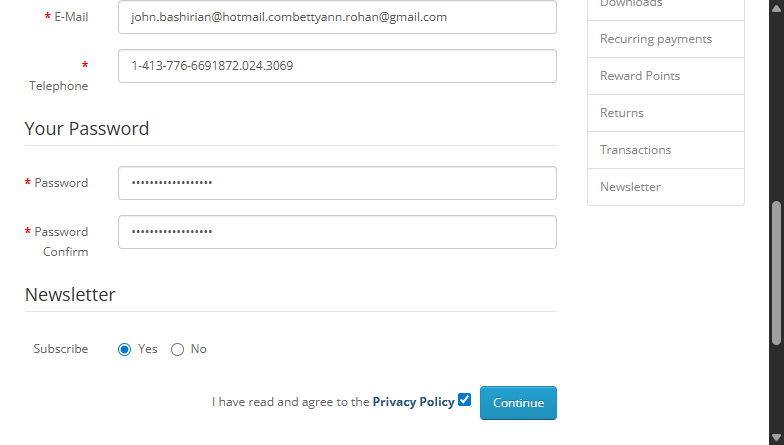
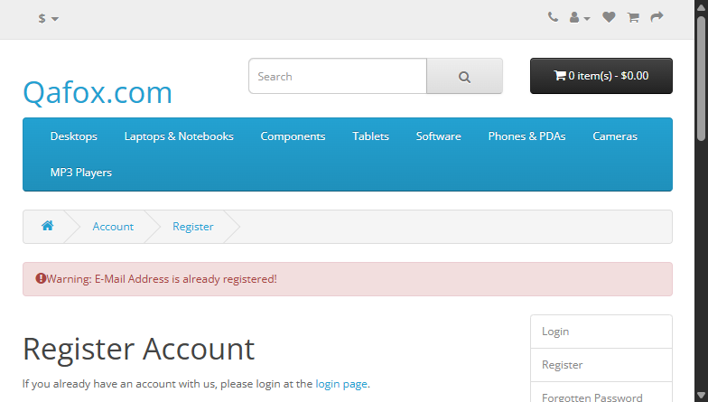

-
TC_RF_002__verifySuccessfulRegistrationEmail
6:57:28 pm / 00:00:02:699 Skip
TC_RF_002__verifySuccessfulRegistrationEmail
03.12.2026 6:57:28 pm 03.12.2026 6:57:31 pm 00:00:02:699 · #test-id=1Status Timestamp Details Skip 6:57:31 pm -
TC_RF_003__verifySuccessfulRegistration
6:57:28 pm / 00:00:02:689 Skip
TC_RF_003__verifySuccessfulRegistration
03.12.2026 6:57:28 pm 03.12.2026 6:57:31 pm 00:00:02:689 · #test-id=2Status Timestamp Details Skip 6:57:31 pm -
TC_RF_001__verifySuccessfulRegistrationWithMandatoryFields
6:57:29 pm / 00:00:02:443 Skip
TC_RF_001__verifySuccessfulRegistrationWithMandatoryFields
03.12.2026 6:57:29 pm 03.12.2026 6:57:31 pm 00:00:02:443 · #test-id=3Status Timestamp Details Skip 6:57:31 pm -
TC_RF_002__verifySuccessfulRegistrationEmail
6:57:38 pm / 00:00:02:981 Skip
TC_RF_002__verifySuccessfulRegistrationEmail
03.12.2026 6:57:38 pm 03.12.2026 6:57:40 pm 00:00:02:981 · #test-id=4Status Timestamp Details Skip 6:57:40 pm -
TC_RF_003__verifySuccessfulRegistration
6:57:38 pm / 00:00:12:894 Skip
TC_RF_003__verifySuccessfulRegistration
03.12.2026 6:57:38 pm 03.12.2026 6:57:51 pm 00:00:12:894 · #test-id=5Status Timestamp Details Skip 6:57:51 pm -
TC_RF_001__verifySuccessfulRegistrationWithMandatoryFields
6:57:38 pm / 00:00:12:436 Skip
TC_RF_001__verifySuccessfulRegistrationWithMandatoryFields
03.12.2026 6:57:38 pm 03.12.2026 6:57:51 pm 00:00:12:436 · #test-id=6Status Timestamp Details Skip 6:57:51 pm -
TC_RF_002__verifySuccessfulRegistrationEmail
6:57:44 pm / 00:00:02:597 Fail
TC_RF_002__verifySuccessfulRegistrationEmail
03.12.2026 6:57:44 pm 03.12.2026 6:57:47 pm 00:00:02:597 · #test-id=7Status Timestamp Details Fail 6:57:47 pm Fail 6:57:47 pm Screenshot -
TC_RF_003__verifySuccessfulRegistration
6:57:59 pm / 00:00:03:568 Fail
TC_RF_003__verifySuccessfulRegistration
03.12.2026 6:57:59 pm 03.12.2026 6:58:02 pm 00:00:03:568 · #test-id=8Status Timestamp Details Fail 6:58:02 pm Fail 6:58:02 pm Screenshot 
-
TC_RF_005__verifySuccessfulRegistrationWithNewsletter
6:57:59 pm / 00:00:03:671 Skip
TC_RF_005__verifySuccessfulRegistrationWithNewsletter
03.12.2026 6:57:59 pm 03.12.2026 6:58:03 pm 00:00:03:671 · #test-id=9Status Timestamp Details Skip 6:58:03 pm -
TC_RF_001__verifySuccessfulRegistrationWithMandatoryFields
6:57:59 pm / 00:00:02:608 Fail
TC_RF_001__verifySuccessfulRegistrationWithMandatoryFields
03.12.2026 6:57:59 pm 03.12.2026 6:58:02 pm 00:00:02:608 · #test-id=10Status Timestamp Details Fail 6:58:02 pm Fail 6:58:02 pm Screenshot -
TC_RF_007__verifyDifferentRegisterPageNavigation
6:58:06 pm / 00:00:02:785 Pass
TC_RF_007__verifyDifferentRegisterPageNavigation
03.12.2026 6:58:06 pm 03.12.2026 6:58:09 pm 00:00:02:785 · #test-id=11Status Timestamp Details Pass 6:58:09 pm Test Passed Pass 6:58:09 pm Screenshot 
-
TC_RF_005__verifySuccessfulRegistrationWithNewsletter
6:58:08 pm / 00:00:03:340 Pass
TC_RF_005__verifySuccessfulRegistrationWithNewsletter
03.12.2026 6:58:08 pm 03.12.2026 6:58:11 pm 00:00:03:340 · #test-id=12Status Timestamp Details Pass 6:58:11 pm Test Passed Pass 6:58:11 pm Screenshot 
-
TC_RF_006__verifySuccessfulRegistrationWithoutNewsletter
6:58:12 pm / 00:00:00:002 Skip
TC_RF_006__verifySuccessfulRegistrationWithoutNewsletter
03.12.2026 6:58:12 pm 03.12.2026 6:58:12 pm 00:00:00:002 · #test-id=13Status Timestamp Details Skip 6:58:12 pm -
TC_RF_004__verifyRegisterFormErrorMessagesWithEmptyFields
6:58:14 pm / 00:00:02:013 Pass
TC_RF_004__verifyRegisterFormErrorMessagesWithEmptyFields
03.12.2026 6:58:14 pm 03.12.2026 6:58:16 pm 00:00:02:013 · #test-id=14Status Timestamp Details Pass 6:58:15 pm Test Passed Pass 6:58:16 pm Screenshot 
-
TC_RF_008__verifyRegistrationWithExistingAccount
6:58:15 pm / 00:00:01:530 Pass
TC_RF_008__verifyRegistrationWithExistingAccount
03.12.2026 6:58:15 pm 03.12.2026 6:58:17 pm 00:00:01:530 · #test-id=15Status Timestamp Details Pass 6:58:17 pm Test Passed Pass 6:58:17 pm Screenshot 
-
java.lang.AssertionError
6 tests
java.lang.AssertionError
3 failed 3 skippedStatus Timestamp TestName Skip 18:57:28 pm TC_RF_002__verifySuccessfulRegistrationEmail Skip 18:57:28 pm TC_RF_003__verifySuccessfulRegistration Skip 18:57:38 pm TC_RF_002__verifySuccessfulRegistrationEmail Fail 18:57:44 pm TC_RF_002__verifySuccessfulRegistrationEmail Fail 18:57:59 pm TC_RF_001__verifySuccessfulRegistrationWithMandatoryFields Fail 18:57:59 pm TC_RF_003__verifySuccessfulRegistration -
org.openqa.selenium.NoSuchSessionException
2 tests
org.openqa.selenium.NoSuchSessionException
2 skippedStatus Timestamp TestName Skip 18:57:59 pm TC_RF_005__verifySuccessfulRegistrationWithNewsletter Skip 18:58:12 pm TC_RF_006__verifySuccessfulRegistrationWithoutNewsletter -
org.openqa.selenium.remote.UnreachableBrowserException
1 tests
org.openqa.selenium.remote.UnreachableBrowserException
1 skippedStatus Timestamp TestName Skip 18:57:29 pm TC_RF_001__verifySuccessfulRegistrationWithMandatoryFields -
org.openqa.selenium.TimeoutException
2 tests
org.openqa.selenium.TimeoutException
2 skippedStatus Timestamp TestName Skip 18:57:38 pm TC_RF_001__verifySuccessfulRegistrationWithMandatoryFields Skip 18:57:38 pm TC_RF_003__verifySuccessfulRegistration
Started
Mar 12, 2026 06:57:18 pm
Ended
Mar 12, 2026 06:58:17 pm
Tests Passed
4
Tests Failed
3
Tests
Log events
Timeline
System/Environment
| Name | Value |
|---|---|
| Tester | Souvik |
| OS | Windows 11 |
| Java Version | 21.0.4 |
| Browser | chrome |